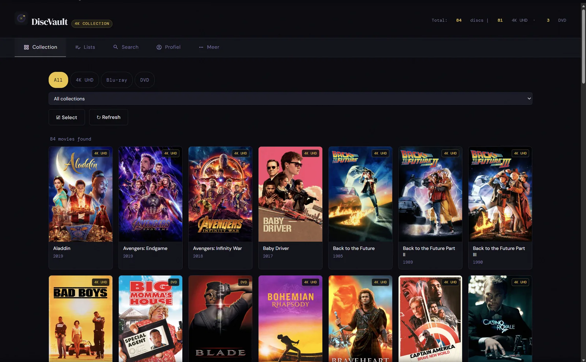
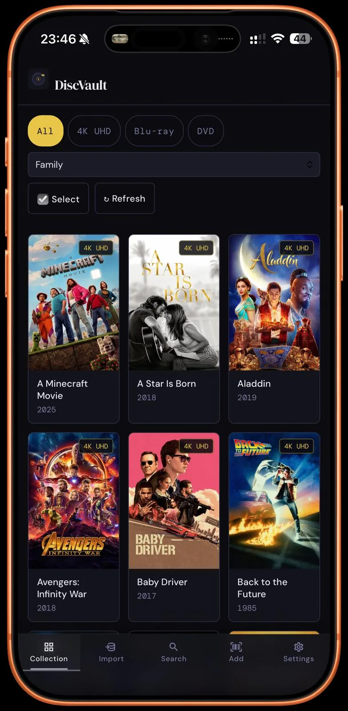

Installieren
Starte den All-in-one-Container mit Web UI, API und MCP-Service. Halte /data persistent für Sammlungsdaten, Poster, Profile und Backups.
Installation →Self-hosted Docs für physische Medien
DiscVault 26 ist ein self-hosted Sammlungsmanager für 4K UHD, Blu-ray und DVD. Diese Dokumentation hilft dir beim Installieren, im täglichen Gebrauch, bei sicherer Verwaltung und beim Anbinden von KI-Assistenten über MCP.


Wofür nutzt du es?
Die Docs sind in kleine statische Seiten aufgeteilt, damit GitHub Pages sie ohne Build-Pipeline direkt hosten kann.
Starte den All-in-one-Container mit Web UI, API und MCP-Service. Halte /data persistent für Sammlungsdaten, Poster, Profile und Backups.
Installation →Füge Titel per Barcode oder manuell hinzu, suche und filtere, öffne Details und pflege Watchlist und Sehverlauf.
Nutzung →Arbeite im Adminbereich mit Passkeys, Registrierung per Einladung, Benutzern, Gruppen, Push-Benachrichtigungen, Logs und Backup/Restore.
Verwaltung →Unter der Haube
/data: collectiedata, posters, avatars, profielen en backups./mcp, bij voorkeur met persoonlijke API-key per gebruiker.Mehrsprachig vorbereitet
Jede Sprache erhält dieselben Seiten, Navigation und Kernerklärungen – natürlich formuliert statt wortwörtlich übersetzt. If a language is unavailable, the site falls back to Dutch or English.
Nicht zu viel versprechen
DiscVault läuft in deiner eigenen Docker- oder Unraid-Umgebung. Diese Docs versprechen kein Cloudhosting und keinen Managed Service.
App-Shell und Lese-Fallback können gecacht werden; Schreibaktionen brauchen weiterhin eine Backend-Verbindung.
Nutze persönliche API-Schlüssel, damit KI-Tools nur Daten sehen, die zu diesem Benutzer gehören.